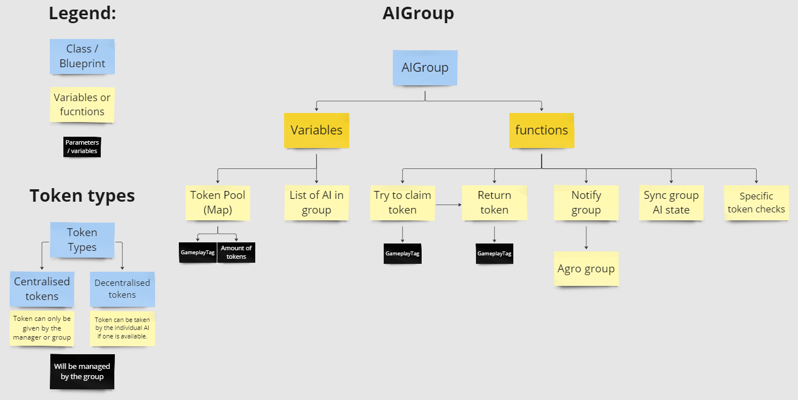

Project period: 2023 - 2024, for an entire school year.
My role: AI Programmer & assisting AI designer.
My contribution:
- AI Architecture
- AI Investigation state
- AI GroupBehaviour
- AI Audio detection & detection rules
- Unreal World Partitioning
Sicaria is a pure stealth game where you use stealth takedowns and gadgets to finish objectives.
You play as an assasin/partizan sabotaging the spanish effort in Antwerp during the 80 year
in the 17th century.
My Contribution:
Technical designdocumented in Miro.Implementedthe whole designRobustandeasy to adjustCentralisedfunctions foreasy debuggingLow levelcomponents inC++(Only programmers touch this)High levelcomponents inBlueprints(Programmers and designers touch this)
verify the technical designI passed it by the AI team and communicated with level desing regarding their needs for the AI. The system was made using a
core behaviour treethat used a state machine to control which
sub treeto run.
After the project I learnedthat while a state machine does work, part of benefit of
using a behaviour treeis
no longer needing to not maintain a state machine. I used a behaviour tree, as intended, in a later project and
through this experience I learnedto-do a bit
more research into systemsbefore using them, even if you think you know how they work.

Process: For the group behavior in our game, I implemented a token system where an AI can only perform an action if it possesses the relevant token for that action. I referenced a token system that was introduced to us by a lecturer. I built the foundation of our system based on his explanation of the concept and made adjustments where necessary for our project. I received feedback from him on the functioning of the system and from the team on its clarity, specifically the level designers, since they would be placing "groups" in the level.

Implementation:
The design, as seen above, has evolved over time but remains fundamentally the same.
There are token maps on individual AI and on the Group class they belong to.
Certain events during the game, such as making noise that an AI hears, triggers the group to
release an investigation token to a specific AI based on a set of checks.
The group manages the releasing, returning, and general group-controlled behaviors, like
triggering aggression in all AI in the group if one of them spots the player.
The core of this system was implemented in C++, with more specific checks, like determining
who receives a token,
handled in Blueprint for easy accessibility by designers incase it needed changes.
Process: The audio perception was mostly developed during the prototyping and preproduction phase, where we were not 100% sure of everything we would need. I ensured the AI could only hear the player when it made sense, and I made it easy for developers to add an audio event to anything they were working on, such as the gadgets in our game. I passed my work by the AI designer but also double-checked with Level Design to verify that I wasn't missing anything in the context of the level, as some areas might require more thorough checks that I may not have take into acount yet.
Implementation: The video above shows an early version of the system where the wall and roof block the noise, and the path around it is too long. For a more recent example, refer to the video shown in the upcoming suspicious state section. The audio perception system I developed for this has the following checks:
Based on the outcomes of these tests, I allowed the AI to detect the noise and react to it. I also made a component that allowed for a simple function call to make noise at a given position. This way, any developer could easely add the component and call the function if their feature needed to alert AI when used, like shown before with the thrown bottle.
The core of this system was built in C++, with the flow of the checks handled in Blueprint to ensure clarity for designers who might have a hard time reading the code.
Process: I worked on all of the suspicious/investigation state behavior with our AI designer. I created all of the functionality and some of the design for this while staying in close contact with the designer during development, they were busy working on another aspect of the AI at the time. I went through several iterations by going back and forth with my designer and also by applying feedback based on playtesting data.
Implementation: The result, as seen in the video above, was an AI that turns towards a sound or something it saw, performs a voiceline, and then moves in to investigate the source. To get the point it needed to walk towards, I used Unreal's EQS (Environmental Query System) to get a point in visual range that is close to the AI and the source but not right on top of the source since that looked weird. For group behavior, we added an extra voiceline that nearby AI would use as a response and implemented a token system to ensure only one AI investigates. When the AI with the token starts investigating, the other AI that heard the noise will return to their normal patrol routes (might still change, WIP). In the video, there was a "scripted event" which got broken up by the thrown bottle, after which they went to their predefined stationary guard spots, hence why one of them moved away from the noise.
Process:
Since the AI designer was busy with other tasks and I wanted to delve into design, I first
began by researching how other games managed multiple AI in combat.
I referenced games similar to ours such as Assassin's Creed Black Flag and Dishonored 2.
I took note of aspects like how their AI surrounds the player and the timing of their
attacks,
evaluated why they implemented these mechanics in their respective games,
and assessed their suitability for our game, making adjustments to the design as necessary.
Finally, I compiled my findings into a visual representation wit text explaining the
behaviour on Miro.
After running it by our AI designer (since she had the final say) who agreed with the
design,
I also created a flow diagram for the required behavior tree.
This help me implement it faster and with less problems along the way
The image below shows a segment of the design I created on Miro as a visual aid for
explaining it to others.
The second image depicts the flow of the behavior, which, aside from some additional checks,
remained consistent in the final implementation.
Implementation:
WIP
The video below shows the current version of the Group Agro Behaviour in action.
It still needs some itterating at this point to feel good but it still represents the design
I made for it.
The main points being:
This is made using the previously mentioned Tokens and uses EQS to find a position near the player, away form other AI if possible and in line of sight of the player.